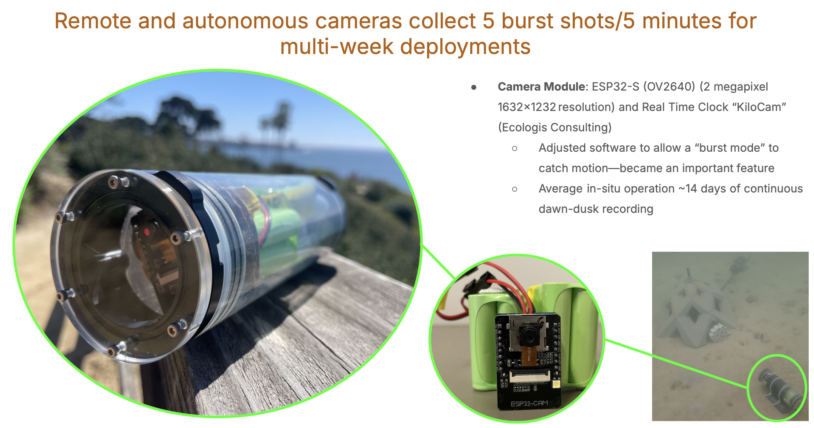
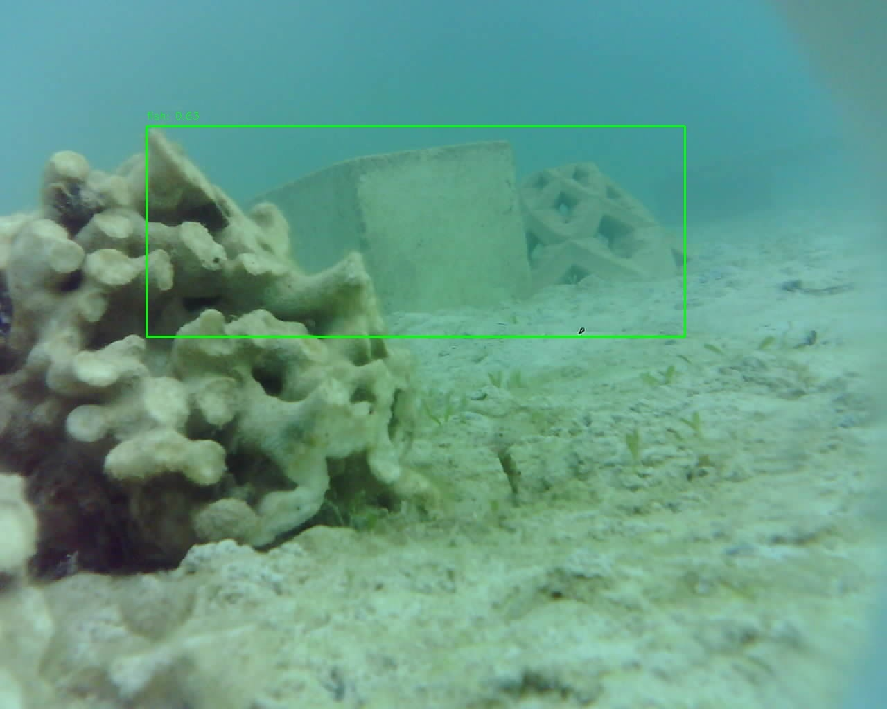

Detect All The Fish
Living digital journal of zero-shot transfer learnings with the Community Fish Detector (CFD) - exploring its capabilities, limitations, and potential for advancing marine ecology research.

About the Community Fish Detector Dataset (from the CFD landing page)
"This dataset is a curated compilation of fish imagery and annotations from a variety of publicly available datasets, with a focus on object detection. It includes >1.9M images/frames and >935,000 bounding boxes from around 17 individual datasets, spanning freshwater, marine, and lab-based captures.
The original datasets include bounding box annotations and metadata in a variety of formats, and the original labels vary in granularity from species-level identifications to generic "fish" labels. This dataset harmonizes the source metadata into a single COCO-formatted archive, with a single category ("fish").
These datasets were used to create CFD. Brief descriptions and license information for each dataset are included in the main documentation; for more detailed information and thumbnails from each dataset, see the fish-datasets GitHub repo. The dataset from which each image was drawn is available in the "dataset" field in the .json file."
How We're Using It
Currently I've been naively applying CFD to bulk visual data collected by the handy, low-power and mildly tempermental ESP32 AI Thinker cameras (reference figure below) that serve as our autonomous "eyes", helping us monitor the [who, how many, when] show up to our broadcasting of "good vibrations" at a degraded reef site. More details on that experiment here if that is a rabbit hole of interest, as we're keen to hear from others willing to co-test this system in different coastal environments. CFD has been helpful to analyze the thousands of burst photo frames from these autonomous camera deployments, despite the suboptimal resolution of these low cost cameras The model helps automate the detection and counting of fish in hours of video data - a task that would be prohibitively time-consuming to do manually.

Where It's Helping
CFD has supported the first step: identifying fish presence and providing bounding boxes around detected individuals, with zero custom labeling. (HUZZAH!) This means that the (generous) marine biologists who volunteer on this project can focus on higher-level analysis, spending their time on deciphering and labeling down to the species level and assess the scene for contextual behaviours (e.g. feeding). This dramatically speeds up the initial data processing pipeline, providing a strong foundation that saves weeks of manual annotation and training time.
Where It Could Use Refinement
The model struggles with certain challenging conditions common in the marine environnents where we deploy: inconsistent visibility water, heavily biofouled camera lenses, and fish partially obscured by other fish or benthic (e.g. coral) structures. And sometimes, a 63% confidence "this is fish" score goes to...a cinder block:

Species-level classification remains limited, and the model sometimes confuses fish with other marine organisms or moving shadows. Fine-tuning on domain-specific data from our reef sites is necessary, but at the time of this writing, there is yet to exist a species-level labeled Hawaiian Reef Fish dataset, hence why we're working on creating one with the custom detection box labeler front end in the demo at the top of the page. Additionally, handling variable camera angles and distances needs refinement for consistent detection performance across different deployment scenarios.
Next Steps
As of now, we're working on creating a custom training set (vibe coded demo at the top; higher resolution video version here because Github gets salty towards files > 100MB+) from Maui and O'ahu field deployments to improve performance in challenging environmental conditions encountered. This includes collecting more in-situ data this spring/summer, exploring data augmentation strategies to better handle the biofouling/visibility challenges, and investigating active learning approaches to efficiently expand the training dataset with minimal manual annotation overhead.